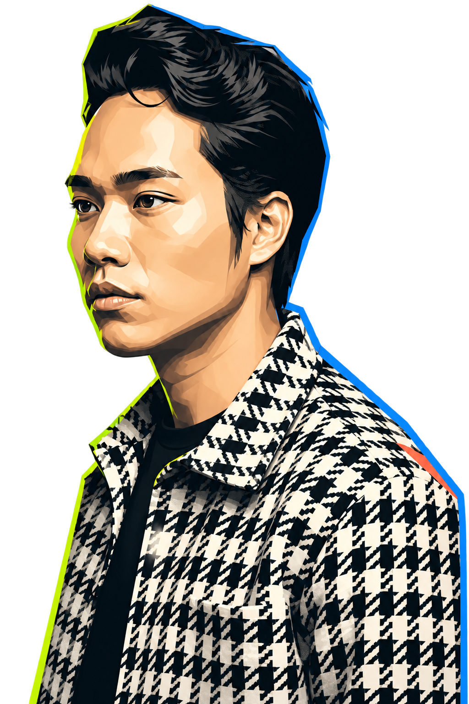
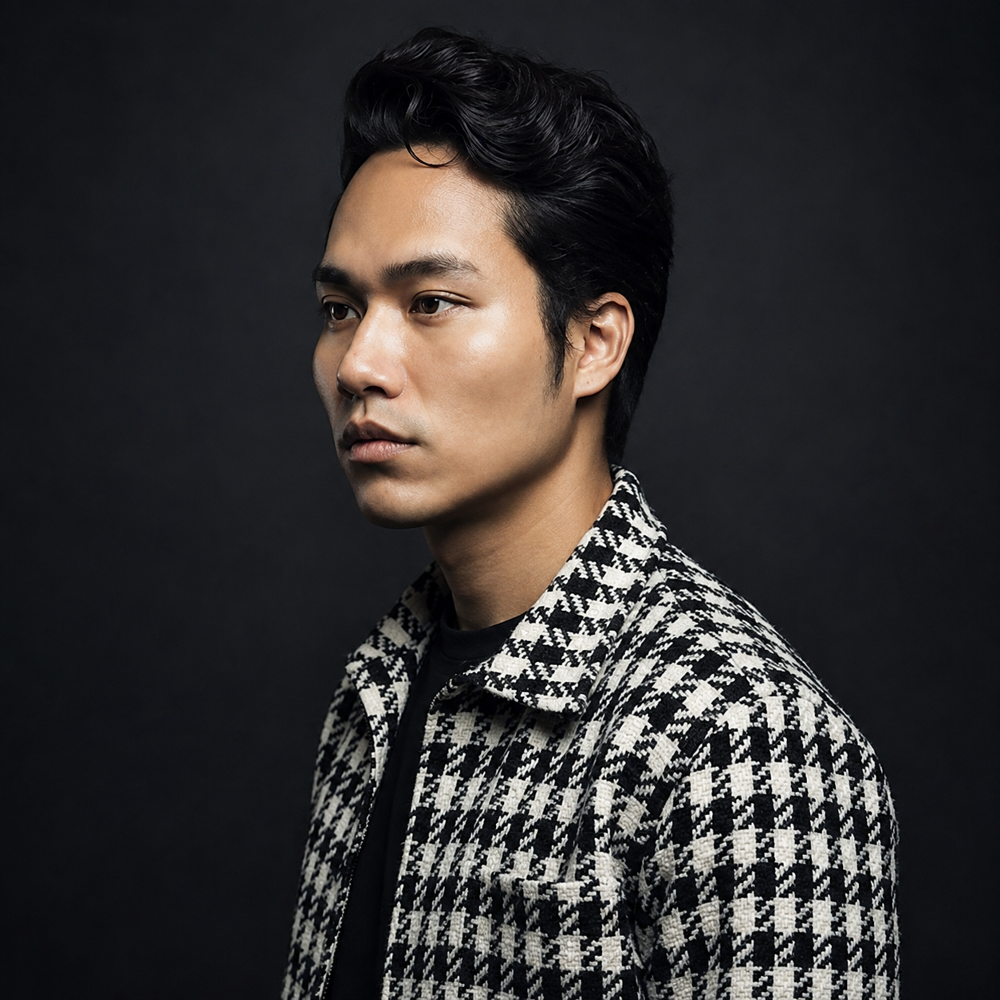

Start with SKYNET.
End-to-end ownership across research, information architecture, a scalable system, handoff and a shipped V2 product.
See the case study ↗Tap to boost the creative engine
Portfolio / 2026
Hello, I’m Aung — a product designer who turns complexity into clarity.

Product thinkingTrusted along the way
Product teams, creative organizations and client partners I’ve helped move forward.
01 / Selected work
Not a gallery of polished screens. These are decisions, systems and outcomes from products built under real constraints.
02 / Design portfolio
A curated wall of interfaces, visual systems and product moments—small snapshots of how strategy becomes something people can see and use.
More visual experiments, client work and interface studies live on Behance.
02 / The quick read
End-to-end ownership across research, information architecture, a scalable system, handoff and a shipped V2 product.
See the case study ↗
Yangon / Myanmar03 / About the designer
I design products where structure, usefulness and emotion meet.
I started in Port & Harbour Engineering, where every decision answered to real constraints. That systems mindset now helps me untangle complex product problems—without losing sight of the person on the other side of the screen.
Research, audits and context before assumptions.
Flows, interfaces and systems people understand.
Handoff, UAT and iteration through the messy finish.
04 / Experience
05 / Let’s talk
I’m open to Product Design and UI/UX opportunities where thoughtful systems, useful research and strong interface craft matter.
Start a conversation ↗